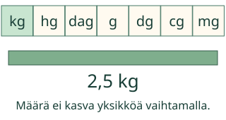
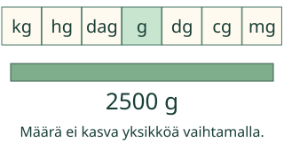
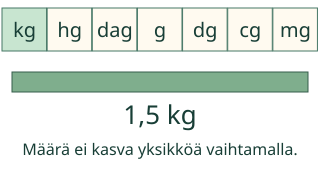
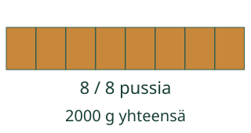

<link rel="stylesheet" href="lesson.css"><section data-b13-unit>
<section data-teaching-step="1" data-lesson-role="teaching-step">
<div class="intro"><p>Loikka pakkaa jauhoja. Vaihda yksikköä, säilytä massa.</p></div>
</section>

<section data-teaching-step="2" data-lesson-role="teaching-step">
<section data-explore><button disabled type="button" data-action="step">Näytä seuraava vaihe</button><div data-model></div><p data-caption>2,5 kg = 2,5 kg. Sama massa säilyy.</p><details data-tools data-lesson-role="teaching-step"><summary>Vaihda mallia tai toista</summary><label>Malli<select disabled data-model-case><option value="forward">2,5 kg → g</option><option value="back">1500 g → kg</option><option value="tonne">1,5 t → kg</option><option value="groups">2 kg → g ja annoksiin</option></select></label><button disabled type="button" data-action="play">Toista vaiheet</button> <button disabled type="button" data-action="stop">Pysäytä</button> <button disabled type="button" data-action="model-reset">Mallin alkuun</button><p>Yksi vaihe nimeää saman määrän uudelleen tai siirtää yhden annoksen. Voit vastata suoraan ilman mallin läpikäyntiä.</p></details></section>
</section>
<nav data-lesson-role="metadata"><a href="#explain">Näin muunnat</a> · <a href="#practice">Kokeile itse</a> · <a href="#teacher">Paperille</a></nav>
<section id="explain" data-lesson-role="worked-example"><section data-teaching-step="3-1" data-lesson-role="worked-example"><h2>Näin muunnat</h2><h2>Sama jauho, enemmän grammoja</h2><p>2,5 kg = 2 500 g. Kilo tarkoittaa tuhatta: 2,5 × 1 000 = 2 500. Kolme kymmenaskelta ovat kg → hg → dag → g. Lukuarvo kasvaa, massa ei.</p><figure data-lesson-role="worked-example"><figcaption>Ratkaistu esimerkki. Yksiköt näkyvät aina lukuarvon mukana.</figcaption></figure></section>
<section data-teaching-step="3-2" data-lesson-role="worked-example"><h3>Grammat takaisin kilogrammoiksi</h3><p>1 500 g = 1,5 kg. Tuhat grammaa on yksi kilogramma; loput 500 g on puoli kilogrammaa. 1 500 : 1 000 = 1,5.</p><figure data-lesson-role="worked-example"><figcaption>Suurempia mittayksiköitä tarvitaan vähemmän.</figcaption></figure></section>
<section data-teaching-step="3-3" data-lesson-role="worked-example"><h3>Yhden välin ansa</h3><p>1 t = 1 000 kg. Tonnista kilogrammaan on tuhatkertainen ero, vaikka nämä nimet olisivat listassa vierekkäin. Myös g → mg on ×1 000. Älä päättele massaa pakkauksen kuvakoosta.</p><p>Ennusta ennen seuraavaa vaihetta: kasvaako vai pieneneekö lukuarvo? Mikä määrä pysyy samana?</p></section>
<section data-teaching-step="3-4" data-lesson-role="worked-example"><h3>Säkistä pusseihin</h3><p>2 kg = 2 000 g. Yhteen pussiin tulee 250 g: 2 000 : 250 = 8 pussia. Vaiheittainen malli siirtää kerrallaan yhden pussillisen. Täytettyjen pussien ja jäljellä olevan jauhon massa on aina yhteensä 2 000 g.</p><figure data-lesson-role="worked-example"><figcaption>Muunna samaan yksikköön ennen annosten laskemista.</figcaption></figure></section></section>

<section data-teaching-step="4" data-lesson-role="teaching-step">
<details data-lesson-role="teaching-step"><summary>Kokeile omaa muunnosta</summary><p>Kirjoita määrä ja valitse saman suureen yksiköt. Tämä näyttää laskun arvon, ei anna osaamisarviota.</p><label>Määrä<input disabled type="text" inputmode="text" data-value value="1" maxlength="128"></label><label>Mistä yksiköstä<select disabled data-from><option value="t">t</option><option value="kg">kg</option><option value="hg">hg</option><option value="dag">dag</option><option value="g">g</option><option value="dg">dg</option><option value="cg">cg</option><option value="mg">mg</option></select></label><label>Mihin yksikköön<select disabled data-to><option value="t">t</option><option value="kg">kg</option><option value="hg">hg</option><option value="dag">dag</option><option value="g">g</option><option value="dg">dg</option><option value="cg">cg</option><option value="mg">mg</option></select></label><button disabled type="button" data-action="convert">Näytä sama määrä</button><p data-converted>Valitse määrä ja yksiköt.</p></details><h2 id="practice">Kokeile itse</h2><p>Yksikkö on tehtävässä. Kirjoita kenttään vain lukuarvo. Myös samanarvoinen murtoluku käy.</p><label>Tehtävä<select disabled data-task><option value="forward">2,5 kg = □ g</option><option value="tonne">1,5 t = □ kg</option><option value="back">1500 g = □ kg</option><option value="milligram">0,75 g = □ mg</option><option value="half">0,5 kg = □ g</option><option value="transfer">2 kg jauhoja pakataan 250 g:n pusseihin ilman hävikk</option><option value="zero">0 kg = □ g</option><option value="match">Täydennä samat massat: 1 kg = □ g; 1 t = □ kg; 1500 </option><option value="sense">Pussin mitattu massa on 500 g</option></select></label><p data-question>2,5 kg = □ g. Sama jauhomäärä.</p><div data-single><label>Lukuarvo<input disabled data-answer type="text" inputmode="text" maxlength="128" placeholder="esim. 1,5 tai 3/2"></label></div><div data-many hidden><label>1. lukuarvo<input disabled data-answer type="text" inputmode="text" maxlength="128"></label><label>2. lukuarvo<input disabled data-answer type="text" inputmode="text" maxlength="128"></label><label>3. lukuarvo<input disabled data-answer type="text" inputmode="text" maxlength="128"></label></div><div data-choicebox hidden><label>Vertaile<select disabled data-answer><option value="">Valitse</option><option value="sama">Sama määrä</option><option value="eri">Eri määrä</option></select></label></div><button disabled type="button" data-action="check">Tarkista</button><p data-feedback aria-live="polite" data-result="neutral">Tarkista, kun olet valmis.</p><details data-lesson-role="hint"><summary>Tarvitsen vihjeen</summary><p>Kirjoita ensin, montako pienempää yksikköä on yhdessä suuremmassa. Pienempään muunnettaessa kerro, suurempaan muunnettaessa jaa. Tarkista yksiköt uudelleen. Käytä annostehtävässä samaa yksikköä sekä kokonaismäärälle että yhdelle annokselle.</p></details>
</section>
<details id="teacher" data-lesson-role="teacher-note"><summary>Opettajalle, paperille ja lopuksi</summary><p>Punnitse esine oikealla vaa’alla. Kirjaa tulos grammoina ja muunna kilogrammoiksi. Näytön pussit ovat nimettyjä määriä, eivät massan tai tiheyden mittaus.</p><p>Poistumiskysymys: Muuta 750 g kilogrammoiksi. Hyväksy 0,75 kg sekä 3/4 kg ja perustelu 750 : 1 000.</p><p>Harjoittelu näyttää nykyisen tuetun vastauksen tarkistuksen. Se ei todista itsenäistä mittaamista, viivästettyä muistamista tai muodollista hallintaa. Vihje ja malli ovat vapaaehtoisia. Henkilöhistoriaa ei tallenneta.</p><p>Muunnin tukee vain tässä nimettyjä saman suureen yksiköitä ja ei-negatiivisia määriä 0…1 000 000. Vastauksissa tuetaan tavallisia kokonais- ja desimaalilukuja sekä murtolukuja (enintään 128 merkkiä; normalisoituna 18 kokonais- ja 9 desimaalimerkkiä). Ei eksponentti- tai laskulausekesyntaksia, negatiivisia määriä eikä pyöristämistä. Etu- ja loppunollat eivät muuta arvoa.</p><p>Toiston 650 ms on esitysväli, ei fyysistä aikaa. Tässä muunnetaan massaa, ei painovoiman aiheuttamaa voimaa. SI-massan perusyksikkö on kg; etuliitteet liitetään grammaan. Tunti ei ole 100 minuuttia.</p></details><noscript data-lesson-role="metadata"><p>Ilman JavaScriptiä alkukuva, esimerkit ja selitykset säilyvät. Muunna ja vastaa paperille. Vuorovaikutus ja tarkistuspalaute tarvitsevat JavaScriptin.</p></noscript></section>
